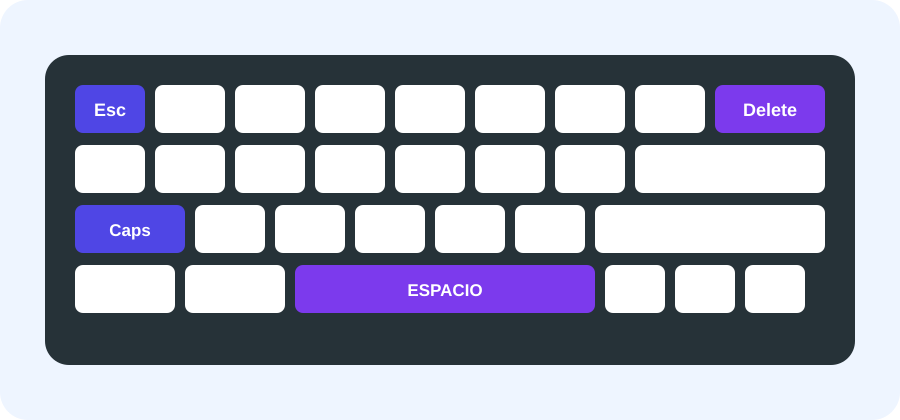
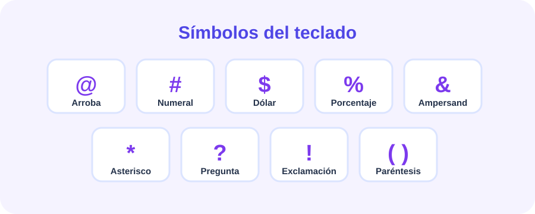
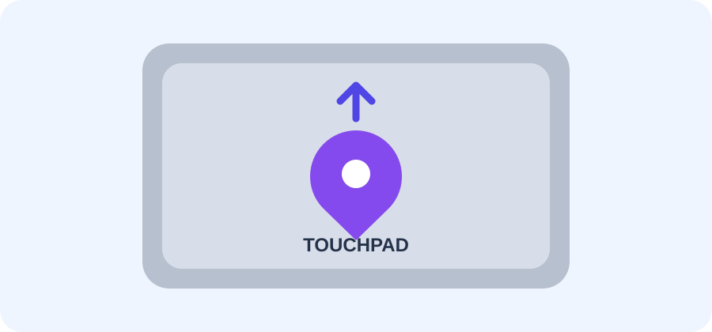

⌨️ 1. Conozcamos las teclas especiales
Estas teclas tienen funciones importantes que nos ayudan a escribir y movernos por el computador.

Enter
Inicia una nueva línea o confirma una acción.
Shift
Permite escribir mayúsculas y algunos símbolos.
Control
Se usa para distintas funciones del computador.
Alt
Permite acceder a funciones y símbolos especiales.
Tab
Desplaza el cursor al siguiente espacio o campo.
Escape
Permite cancelar o salir de algunas acciones.
Delete
Elimina el carácter o elemento seleccionado.
Direccionamiento
Mueven el cursor o permiten desplazarse.
🔣 2. Los símbolos del teclado
Los símbolos aparecen en textos, correos, matemáticas, Internet y programación. En muchos teclados podemos escribirlos usando Shift o Alt Gr.

| Símbolo | Nombre | Forma habitual |
|---|---|---|
| @ | Arroba | Alt Gr + Q |
| # | Numeral | Alt Gr + 3 |
| $ | Dólar | Shift + 4 |
| % | Porcentaje | Shift + 5 |
| & | Ampersand | Shift + 6 |
| * | Asterisco | Shift + 8 |
| ? | Interrogación | Según el teclado |
| ! | Exclamación | Shift + 1 |
| ( ) | Paréntesis | Según el teclado |
Las combinaciones pueden cambiar según la distribución del teclado.
🖱️ 3. El panel táctil o Touchpad
El touchpad es la superficie táctil de los portátiles que permite controlar el puntero sin usar un mouse externo.

☝️ Un toque
Realiza un clic.
☝️☝️ Dos toques
Realiza un doble clic.
👉 Arrastrar
Mantén presionado y mueve el dedo.
✌️ Dos dedos
Desplázate por una página.
👆 Clic derecho
Abre opciones adicionales.
🎮 4. Actividades interactivas
Actividad 1: ¿Qué tecla es?
¿Qué tecla utilizamos para comenzar una nueva línea?
Actividad 2: ¿Para qué sirve?
¿Qué tecla permite escribir una letra en MAYÚSCULA mientras la mantienes presionada?
Actividad 3: Encuentra el símbolo
Haz clic en el símbolo que normalmente aparece en un correo electrónico.
Actividad 4: Reto del Touchpad
¿Cómo puedes desplazarte por una página usando el touchpad?
Actividad 5: Escribe un símbolo
Escribe una dirección de correo que incluya @.
🧠 5. Quiz final
Responde las 4 preguntas. Cada respuesta correcta vale 25 puntos.
1. ¿Qué tecla permite comenzar una nueva línea?
2. ¿Qué símbolo se utiliza normalmente en un correo?
3. ¿Qué tecla permite escribir una mayúscula mientras se mantiene presionada?
4. ¿Qué acción permite desplazarse usando el touchpad?